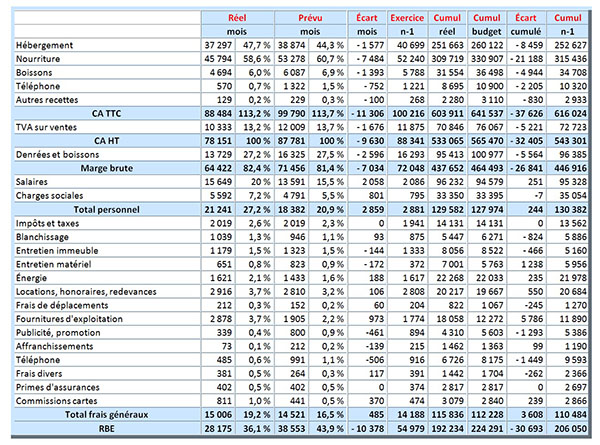

Les principales opérations mensuelles
Il s'agit des transactions qui se produisent régulièrement au cours d'un mois.
Elles incluent également la clôture des comptes, les ajustements de fin de mois et la préparation des états financiers mensuels.
Ces opérations sont essentielles pour assurer une comptabilité précise et à jour.
- Déclarations fiscales : Préparation et soumission des déclarations fiscales mensuelles.
- Gestion de la paie : Traitement des salaires et des charges sociales pour le personnel.
- Cotisations patronales : Elles englobent les charges patronales-> 25 à 42%, plus les charges salariales-> 23 à 25%
- Trésorerie : Vérification de la concordance entre les enregistrements comptables et les relevés bancaires ► Rapprochements bancaires.
- Clôture des comptes : Vérification et ajustement des comptes pour le mois écoulé ► Edition des journaux, lettrage.
- Ajustements : Enregistrement des amortissements, provisions et autres ajustements nécessaires ► Ecritures d'inventaire.
- Préparation des états financiers : Élaboration du bilan, du compte de résultat et du tableau des flux de trésorerie.
- Rapports de gestion : Élaboration de rapports pour la direction sur la performance financière du mois.
- Exemple d'un reporting mensuel : Collecte des données comptables et financières pour analyse et synthèse.
Exemples d'opérations mensuelles
1/ Déclaration de TVA
|
Débit |
Crédit |
| 4457 TVA collectée |
1200 |
|
| 44562 TVA déductible s/immobilisations |
|
600 |
| 44566 TVA déductible s/biens et services |
|
400 |
| 4455 TVA à décaisser |
|
200 |
2/ Salaires
|
Débit |
Crédit |
| 6411 Salaires et appointements |
9000 |
|
| 43 Organismes sociaux (retenues salariales 25%) |
|
2250 |
| 421 Personnel, rémunérations nettes |
|
6750 |
3/ Cotisations patronales
|
Débit |
Crédit |
| 645 Cotisations sociales patronales |
3780 |
|
| 43 Organismes sociaux (cotisations patronales 42%) |
|
3780 |
4/ Trésorerie
a. Décaissement de TVA
|
Débit |
Crédit |
| 4455 TVA à décaisser |
200 |
|
| 512 Banque |
|
200 |
b. Décaissement des charges sociales
|
Débit |
Crédit |
| 43 Organismes sociaux (2250 + 3780 = 9000 x 67%) |
6030 |
|
| 512 Banque |
|
6030 |
5/ Ajustement d'amortissement d'un équipement acheté 12000 € avec une durée de vie de 5 ans :
a. Amortissement annuel = 12000 € / 5 ans = 2400 €
|
Débit |
Crédit |
| 681 Amortissements |
2400 |
|
| 281 Amortissements cumulés |
|
2400 |
b. Amortissement mensuel = 12000 € / 5 ans / 12 mois = 200 €
|
Débit |
Crédit |
| 681 Amortissements |
200 |
|
| 281 Amortissements cumulés |
|
200 |
Exemple d'un reporting mensuel sur les données comptables et financières d'un hôtel

À propos de moi
Mes compétences
Expérience professionnelle
Formation
Centre d'intérêts
Contact
Opérations quotidiennes
Les principaux indicateurs
Soldes Intermédiaires de Gestion
Compte de résultat prévisionnel